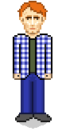
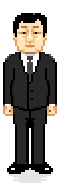
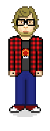
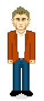

-
Denis "Tilon" Castéran
Je suis fortement intéréssé par tout ce qui touche à l'informatique, l'idée de faire un jeu vidéo, de construire le projet de A à Z est une expérience unique dans la scolarité. Cette idée de projet de groupe me parait vraiment intéressante. C’est pourquoi, je pense que faire un jeu nous permettra de nous amuser, tout en développant nos compétences et produire quelque chose de cool au passage.

-
Tony "Gigatank3000" Huang

Mon profil n'est pas celui d'un joueur acharné mais j'apprécie les jeux vidéos. L’idée d’en programmer un par moi-même me plait donc, en particuler le fait de créer un jeu de qualité qui me rendrait fier et me permetrait de tester mes limites. Je suis plus attiré par le travail d’ingénieur que celui d’informaticien, (j’aime le rôle de l’ingénieur par rapport aux composantes innovation/solutions technologique), mais je n'en n’aime pas moins l’informatique, qui est indéniablement un secteur d’avenir et d'intérêt à mes yeux. Je pense que ce projet nous permettra d’avoir un avant goût de notre futur travail dans ces deux domaines : ingénierie et informtique, c'est pourquoi je compte particulièrement m'y appliquer.
-
Pierre "Pim" Marsais
Passionné par approximativement tout ce qui touche au domaine de l’informatique (et des poneys) depuis des années, j’adore écrire les lignes de code qui permettent de résoudre un quelconque problème de nature algorithmique. C'est pour quoi la création d’un jeu vidéo, contenant une grande variété d’algorithmes (globalement triviaux) à implémenter, me parait très interessante. De plus, grâce à ce projet, j’ai l’opportunité de faire quelque chose que je n’aurais probablement pas l’occasion de refaire dans le futur : du \LaTeX{} (euh, je voulais dire “un jeu vidéo”).

-
Aldric "Albatroce" Charles

Passionné de jeux vidéos depuis mon plus jeune âge, j’ai même participé à quelques tournois assez prestigieux. Même si coder n’est pas la plus grande de mes qualités, je m’intéresse de près à tout ce qui touche à l’informatique et je suis sûr que ce projet peut m’apporter une expérience intéressante. Artiste dans l’âme, je joue d’un instrument depuis plus de onze ans, je m’occuperai ainsi surtout des idées, de la musique et des graphismes du jeux.